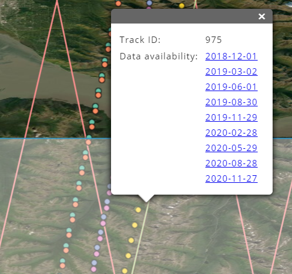
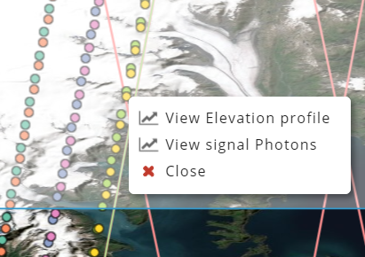
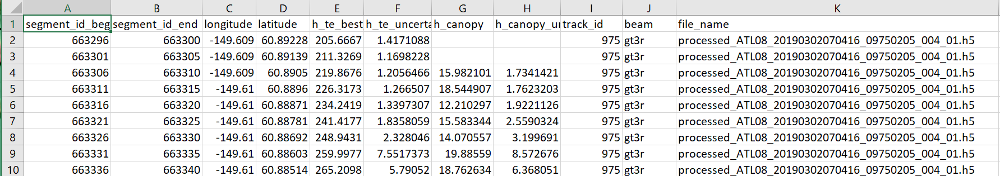
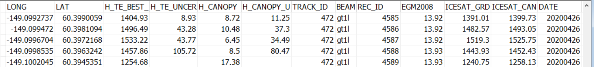
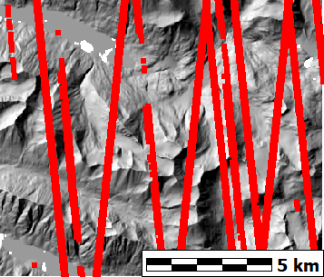
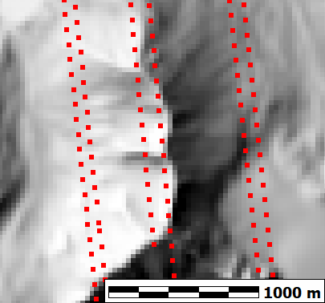
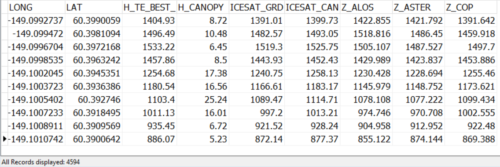

Selection map at http://openaltimetry.org/.

Right click on track, and pick view elevation profile.
Cycle through all the dates, saving the CSV files. Insure you do not change to the Photon View, or to a product other than ATL08. This is a manual process of picking tracks and saving them.
For the photon ATL03 data, you must select each beam you want and download them indivudually.

Fields as downloaded in CSV format from http://openaltimetry.org/.

File after merging and converting individual dates and tracks (batch process).

Alaska test region with ICESat-2 data overlain

Coverage for a single day's orbit.

Elevations added for the three global DEMs via bilinear interpolation.
Guth, P. L., & Geoffroy, T. M. (2021; https://doi.org/10.1111/tgis.12825 Paper as submitted in January 2021). show that the global DEMs sample somewhere between the ICESat-2 ground and top canopy elevations.
Last revised 1/15/2022